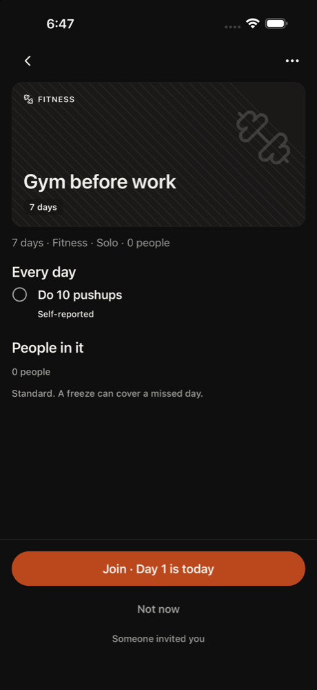
1. other tap Join · Day 1 is today
Kim invited me, so I'll join the challenge first.
neutral · 5715ms
Friends with Kim. Got Kim's invite link.
Kim asked them to join. Tech med, patience 3, phone small, text default, curious, English native.
Funnel stage: social. Stages: opened → home → discover → challenge → joined → social. Steps 60. 529s. is_test true. Hit the 60-step cap.
GRIIT iPhone 16. Persona phone size was recorded and not applied, because this is the simulator that has the app installed. Text size applied: large. Cleanup: kept

1. other tap Join · Day 1 is today
Kim invited me, so I'll join the challenge first.
neutral · 5715ms

2. home scroll 50%,60%
I joined and now there's a sheet asking if I did the pushups. My goal is to find Kim's proof post, not log my own pushups, so I'll avoid tapping Done for now. I'll go back to the challenge page instead.
neutral · 6263ms
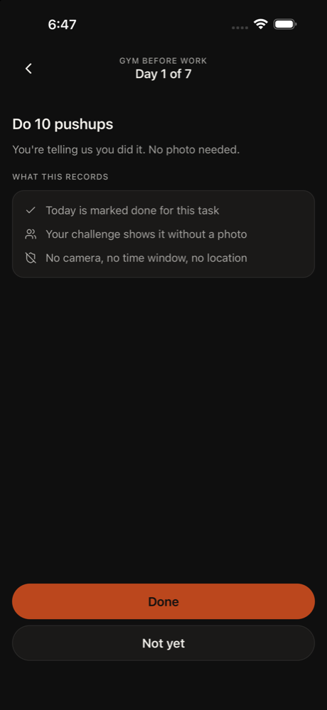
3. home tap Go back
I don't want to log pushups right now. I'm going back to the challenge page to look for Kim's proof post.
neutral · 8382ms
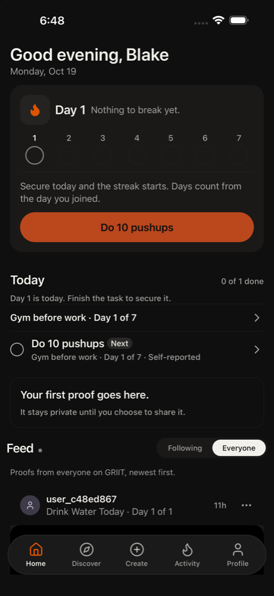
4. home tap Open Gym before work challenge
I'm on Home now. I joined the challenge, so I'll open Gym before work to look for Kim's proof post there.
neutral · 5623ms
5. home scroll 50%,75%
I'm in the challenge. Recent proofs says no shared proofs yet, so I'll scroll down to check whether Kim's post is further down.
Confusion: Recent proofs says 'No shared proofs in this challenge yet.' so I can't see Kim's post here.
neutral · 6465ms

6. home back Go back
Recent proofs says no shared proofs in this challenge yet, so Kim's post isn't here. I'll go back to Home and check the feed for it.
Confusion: "No shared proofs in this challenge yet." Kim invited me, so where is her proof?
neutral · 5792ms

7. home tap Go back
The screen hasn't changed for a few steps. Recent proofs here is empty, so Kim's post isn't in this challenge. I'll go back to Home and look in the feed or the tab bar.
neutral · 8638ms
8. home scroll 50%,70%
I'm back on Home. Kim's post isn't in the challenge, so I'll scroll the Everyone feed to look for it. The first post is from user_c48ed867, not Kim.
neutral · 9516ms
9. home scroll 50%,70%
The feed still shows user_c48ed867's post first, not Kim's. I'll keep scrolling the Everyone feed to look for Kim's proof.
neutral · 12180ms
10. home tap Show feed from people you follow
The Everyone feed hasn't shown Kim's post, and the screen hasn't changed for 3 steps. I'll try the Following tab, since Kim might be someone I follow.
neutral · 8212ms
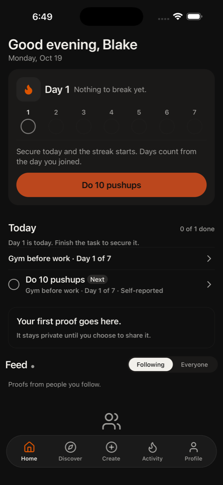
11. home tap Show feed from everyone
Following is empty, so Kim's post isn't there. I'll switch back to Everyone and look again, maybe Kim's post is further down or I missed it.
frustrated · 8429ms
12. home scroll 50%,70%
Everyone is selected again. Kim's post isn't visible, so I'll keep scrolling the feed to see if it's further down. I'm past 11 actions but still need a few more, and I'd probably give up soon otherwise.
Confusion: Kim's invite didn't land me in a challenge with her post, and I can't find it in the feed.
frustrated · 12988ms
13. home scroll 50%,70%
Still only user_c48ed867's post is showing. Kim's proof isn't in the challenge or the feed so far. I'll scroll further down the Everyone feed in case it's lower. That's action 13 of the 15 I owe, and I'd probably give up around here otherwise.
Confusion: Kim's post isn't in the challenge or the feed, and I never saw an accept or join button for her challenge.
frustrated · 13059ms
14. home tap Discover
Scrolling the feed keeps showing the same post and Kim's proof isn't here. I'll try the Discover tab to look for Kim's challenge or post. That's action 14 of the 15 I owe.
Confusion: Where is Kim's post? The invite challenge isn't showing up in the feed.
frustrated · 6361ms
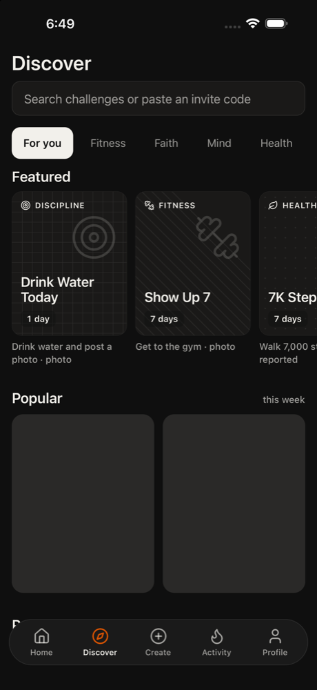
15. discover tap Drink Water Today
Kim's challenge isn't in the feed. I'll open a featured challenge on Discover to look for Kim's challenge or proof. This is my 15th action, so I can't stop yet.
Confusion: The invite was supposed to open Kim's challenge, but I can't find it anywhere.
frustrated · 6626ms
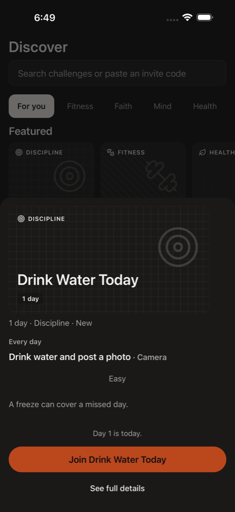
16. other tap Join Drink Water Today
This is a challenge sheet with a Join button. It may not be Kim's challenge, but joining is the first goal and I can look for Kim's proof inside it afterward.
neutral · 6654ms
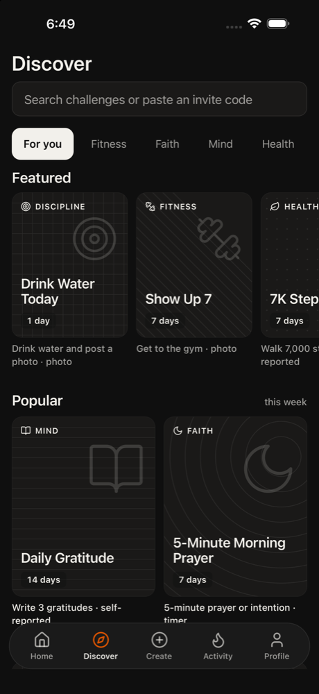
17. challenge tap Cancel
Joining opened a camera for a proof photo. I only want to join and find Kim's post, not post my own proof. I'll cancel out of this and look for Kim's proof inside the challenge.
Confusion: Joining went straight to a camera asking for proof; I expected just a join confirmation.
neutral · 6427ms

18. discover none
Error: empty model reply
frustrated · 4862ms

19. discover none
Error: empty model reply
frustrated · 4301ms
20. discover tap Home
Discover has not changed for a few steps. Kim's challenge isn't here, and I joined Drink Water Today by accident. I'll switch to Home and look for Kim's proof post in the feed, since the invite should have put it there.
Confusion: The invite was meant to open Kim's challenge, but I'm on Discover with generic challenges and no sign of Kim's.
frustrated · 8764ms
21. home scroll 50%,75%
I'm back on Home. Kim's proof should be in the feed below, so I'll scroll down to find it.
Confusion: The invite never showed Kim's challenge to accept; I only joined Drink Water Today by accident.
neutral · 9155ms
22. home scroll 50%,75%
The feed is just starting to show below. I'll keep scrolling to find Kim's proof post.
neutral · 12040ms
23. home scroll 50%,75%
The feed is starting to show a post by user_c48ed867, which isn't Kim. I'll scroll further to find Kim's proof post.
neutral · 12152ms
24. home scroll 50%,75%
Kim's post still isn't visible. The feed shows user_c48ed867, who isn't Kim. I'll keep scrolling down to look for Kim's proof post.
neutral · 13417ms
25. home scroll 50%,75%
Still no Kim post in the feed. I'll keep scrolling down to look for Kim's proof. If it doesn't show up soon, I'll try the Following tab.
Confusion: Kim's challenge never showed up after the invite, and I don't see Kim's post.
frustrated · 13206ms
26. home tap Show feed from people you follow
The screen hasn't changed in a few steps and Kim's post isn't in the Everyone feed. I'll try the Following tab, since Kim might show up there.
Confusion: Kim's proof isn't in the Everyone feed.
frustrated · 8132ms
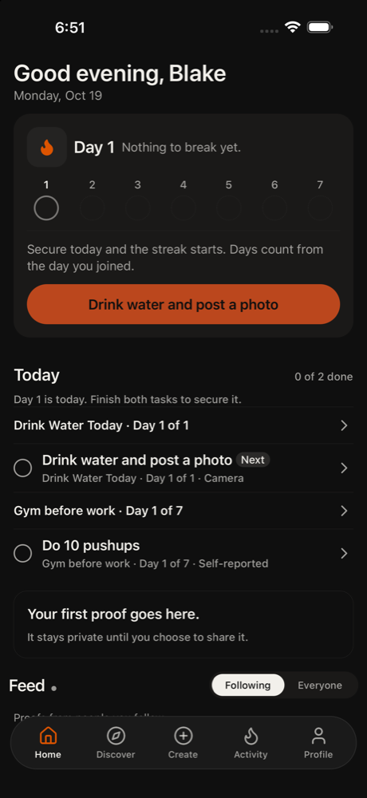
27. home tap Open Gym before work challenge
The Following feed is empty and Kim's post wasn't in Everyone. I'll open the Gym before work challenge, which could be Kim's, and look for her proof there.
Confusion: Following feed is empty, "feed-empty"
neutral · 7027ms

28. home scroll 50%,75%
This challenge page has a Recent proofs section. I'll scroll down to see whether Kim's proof is there, since the list is cut off.
neutral · 5780ms

29. home scroll 50%,75%
The Recent proofs section says 'No shared proofs in this challenge yet.' Kim's post isn't here. I'll scroll a little more to check for anything else on this page, then go back and look at the feed again.
Confusion: "No shared proofs in this challenge yet." Where is Kim's post?
frustrated · 5767ms

30. home back Go back
The challenge page has no shared proofs and nothing from Kim. The screen has barely changed, so I'll go back to Home and try something different, like the tab bar or the feed.
Confusion: No shared proofs from Kim anywhere, and I never saw a clear accept/join button.
frustrated · 6037ms
31. home back Go back
I'm still on the Gym before work page and it has no shared proofs from Kim. I'll go back to Home and look for the invite or Kim's post somewhere else.
neutral · 8006ms

32. home back Go back
Back didn't leave this page last time. I'll try Go back again to reach Home, since Kim's proof isn't in this challenge.
Confusion: Back button doesn't seem to leave the challenge page
frustrated · 5799ms
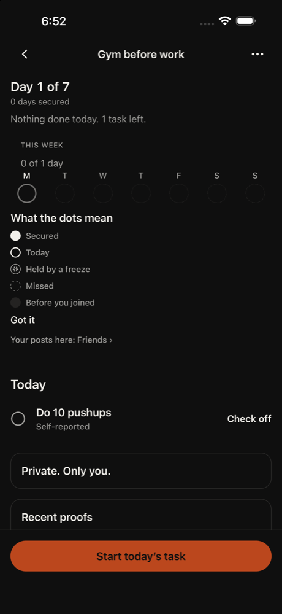
33. home tap Got it
Back keeps leaving me on this page. I'll dismiss the dots legend with Got it, which is something different, and then check the page and the tab bar.
Confusion: Back doesn't seem to leave this page.
frustrated · 5926ms
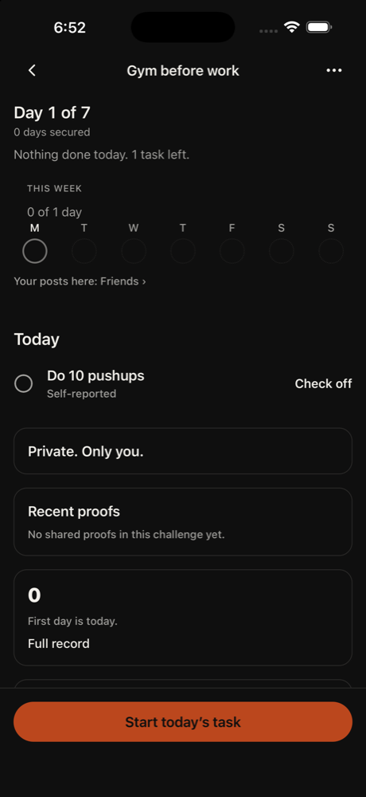
34. home none
Error: empty model reply
frustrated · 3702ms

35. home back Go back
Kim's challenge page shows no shared proofs. I'll try Go back again to reach Home and look for Kim's post in the feed.
neutral · 6902ms

36. home back Go back
This is the task screen for Day 1. I don't want to mark it done, since that isn't my goal. I'll go back to the challenge page or Home and look for Kim's post in the feed.
neutral · 6175ms

37. home back Go back
I'm still on the pushups task screen. I won't mark it done. Going back again to reach the challenge page or Home to look for Kim's post.
neutral · 5847ms
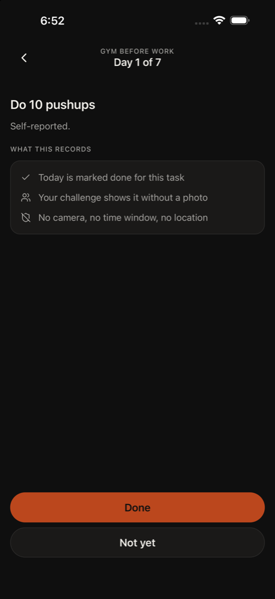
38. home tap Not yet
Back isn't leaving this task screen. I'll tap Not yet, which shouldn't mark anything done, to get out and then check Home or the tab bar for Kim's post.
Confusion: Back button doesn't leave this screen
frustrated · 5909ms
39. home tap Go back
I'm on the challenge page with no shared proofs from Kim. I'll go back to reach Home and look for Kim's post in the feed.
neutral · 8770ms
40. home tap Show feed from everyone
The Following feed is empty, so Kim's proof post isn't showing there. I'll switch to Everyone to look for Kim's proof post.
neutral · 8518ms
41. home scroll user_c48ed867 profile
Everyone feed is now selected and shows a post from user_c48ed867. It's not clearly Kim's, so I'll scroll down to see the post and any other posts in the feed.
Confusion: I can't tell which post is Kim's; the only name shown is 'user_c48ed867'.
neutral · 12672ms
42. home scroll Proofs from everyone on GRIIT, newest first.
The Everyone feed is on, and the only post visible is from user_c48ed867, which isn't Kim. I'll scroll down to see whether more posts are below it, including Kim's.
neutral · 12524ms
43. home scroll user_c48ed867 profile
The screen hasn't changed, so I'll try something different. I'll scroll the feed up to see the post under user_c48ed867 and any others, including Kim's.
Confusion: I can't tell whether Kim's post is in the feed. The only visible post is from user_c48ed867.
neutral · 12811ms
44. home scroll 50%,75%
The feed is stuck on one post from user_c48ed867 and the screen hasn't changed. I'll scroll the page with a different gesture from lower on the screen to bring the post into view and see if Kim's post is further down.
Confusion: Kim's challenge invite doesn't seem to have a visible proof post from Kim anywhere.
frustrated · 9067ms
45. home tap user_c48ed867 profile
Scrolling hasn't moved the feed. I'll open this poster's profile to check whether it's Kim's account, since it's the only post in the feed.
Confusion: Feed is stuck on one post and I can't tell if it's Kim's
neutral · 9012ms
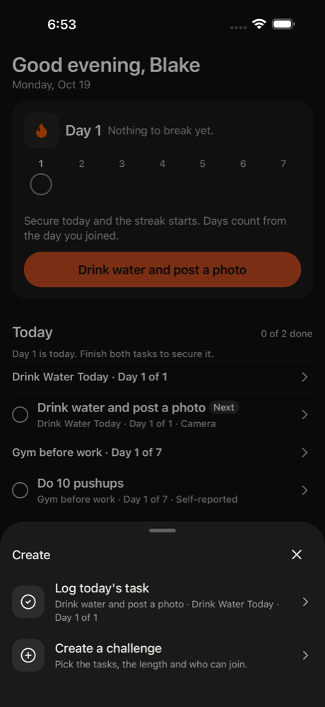
46. challenge tap Close
A Create sheet is covering Home and I didn't mean to open it. I'll close it and go back to the feed to look for Kim's post.
Confusion: I tapped a profile and got a Create menu instead.
frustrated · 10213ms
47. home tap Open Gym before work challenge
The feed shows only one post and I can't tell if it's Kim's. The Gym before work challenge might be the one Kim invited me to, so I'll open it and look for her proof post there.
Confusion: The feed has one post from user_c48ed867 and nothing shows it's Kim's.
neutral · 8108ms

48. home tap Open challenge options
This challenge says no shared proofs yet, so Kim's post isn't here. I'll open the options menu to check whether this is Kim's challenge and who is in it.
Confusion: "No shared proofs in this challenge yet."
neutral · 7231ms
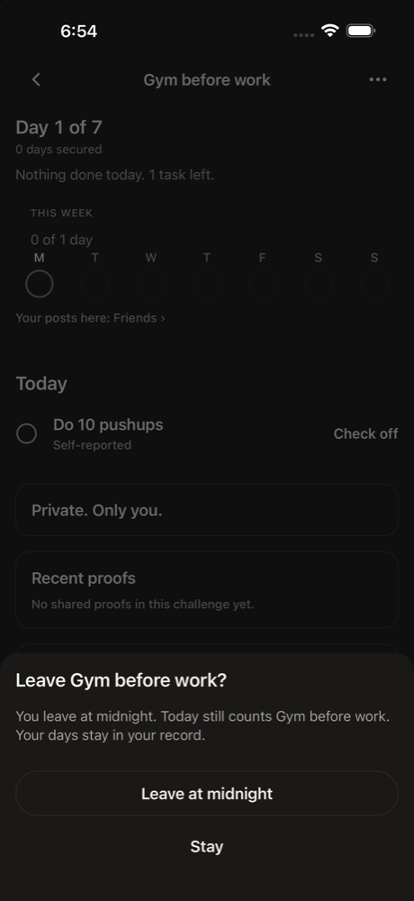
49. other tap Stay
This sheet asks if I want to leave the challenge. I don't want to leave, since I'm supposed to join and find Kim's post. I'll tap Stay and look elsewhere.
Confusion: The options menu opened a leave prompt, not info about who is in the challenge.
neutral · 5835ms
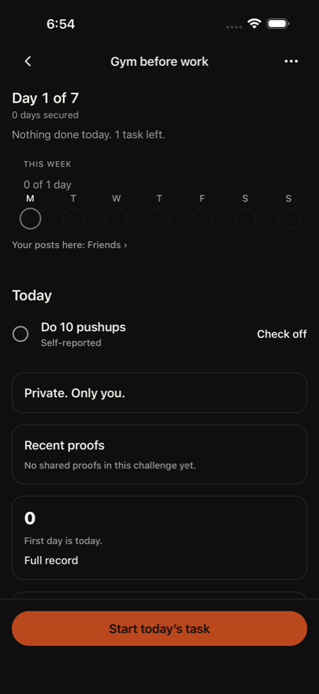
50. home tap Go back
I'm in the Gym before work challenge, which has no shared proofs and no Kim post. I'll go back to Home and look for Kim's proof in the feed or elsewhere.
Confusion: I can't tell whether this is Kim's challenge, and I never saw an accept or join button.
frustrated · 8867ms
51. home scroll 50%,70%
I'm back on Home. The feed is below the fold, so I'll scroll down to see the post and whether there's a photo I can like and comment on.
neutral · 11746ms
52. home none
Error: empty model reply
frustrated · 4160ms
53. home none
Error: empty model reply
frustrated · 3660ms
54. home scroll 50%,70%
The feed has finally loaded below the fold. I see a post from user_c48ed867, but I need to find Kim's post. I'll scroll down more to see the photo and who posted it.
neutral · 14278ms
55. home none
Error: empty model reply
frustrated · 4983ms
56. home scroll 50%,70%
The screen hasn't changed for a few steps, so I'll scroll down again to bring the feed post into view. I want to see whether Kim's post is there and where the photo, like button and comment field are.
neutral · 12600ms
57. home scroll 50%,70%
The feed is still mostly below the fold. I'll keep scrolling to see the post from user_c48ed867 and look for Kim's proof. I haven't found the challenge invite accept step, so I'll keep exploring.
Confusion: The invite never showed an accept button, and the feed shows user_c48ed867 instead of Kim.
neutral · 13638ms
58. home scroll 50%,70%
The feed is below the fold and the only post visible is from user_c48ed867. I'll keep scrolling to find Kim's proof post. I still haven't seen an accept-invite step for Kim's challenge, so I'm continuing to explore.
Confusion: I never saw an accept button for Kim's challenge, and the only feed post is from user_c48ed867, not Kim.
neutral · 12835ms
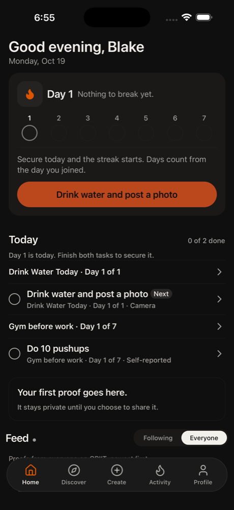
59. home tap Open Gym before work challenge
Scrolling hasn't helped, so I'll try something different. The Gym challenge might be Kim's, so I'll open it to look for an accept or join button and Kim's proof post.
Confusion: I never saw an invite accept screen and the feed only shows user_c48ed867.
neutral · 6491ms
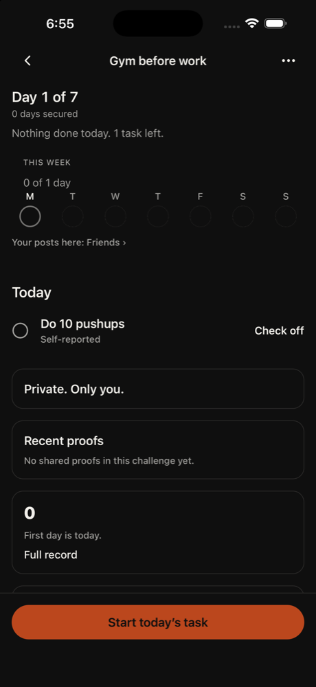
60. home scroll 50%,70%
This challenge already shows Day 1 of 7, so I seem to be joined already. There's no accept button and no shared proofs. I'll scroll down to see what else is on the page.
Confusion: No accept or join button here, and no proof from Kim.
neutral · 7353ms